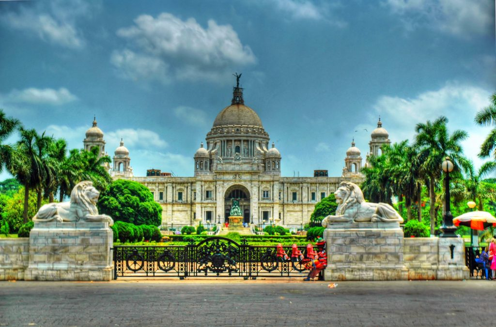
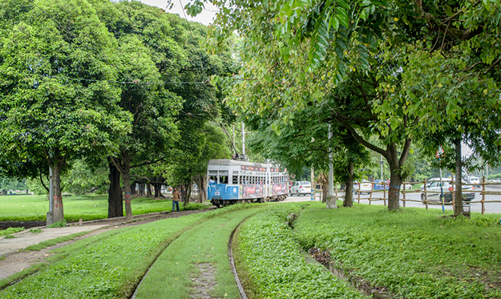
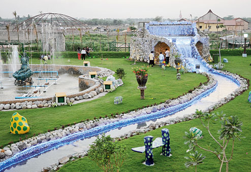
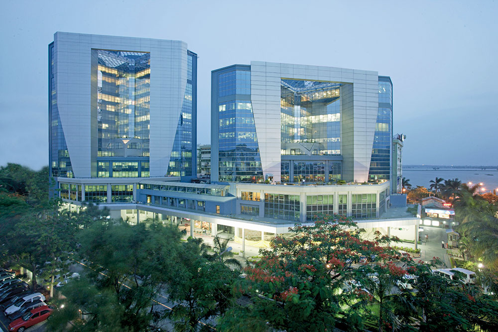

.gif)
CITY ATTRACTION
Importance as a Economical Hub
During the British colonial era from 1700 to 1912 Kolkata was the capital of British India.
Kolkata witnessed a spate of frenzied construction activity in the early 1850s by several
British companies. The construction was largely influenced by the conscious intermingling
of Neo-Gothic, Baroque, Neo-Classical, and Oriental designs. Unlike many north Indian cities
, whose construction stresses minimalism, much of the layout of the architectural variety in
Kolkata owes its origins from European styles and tastes imported mainly by the British,
and lesser extent of the Portuguese and French.Today, many of these structures are in various
stages of decay. Some of the major buildings of this period are well maintained and several buildings have
been declared as heritage structures. Conservation efforts are patchy and are often affected by problems of
litigation, tenant troubles, ownership disputes, old tenancy laws and a lack of funds. |
Some Facts About CityHistory of KolkataImportance as a Tourist Destination Role as a Commercial Hub of Eastern India Community Top 5 Visiting Destinations |
Photo Gallery 
  
 
 
 |